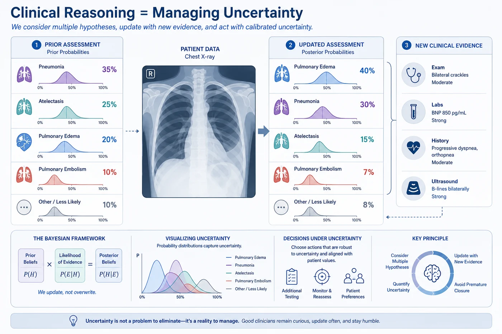
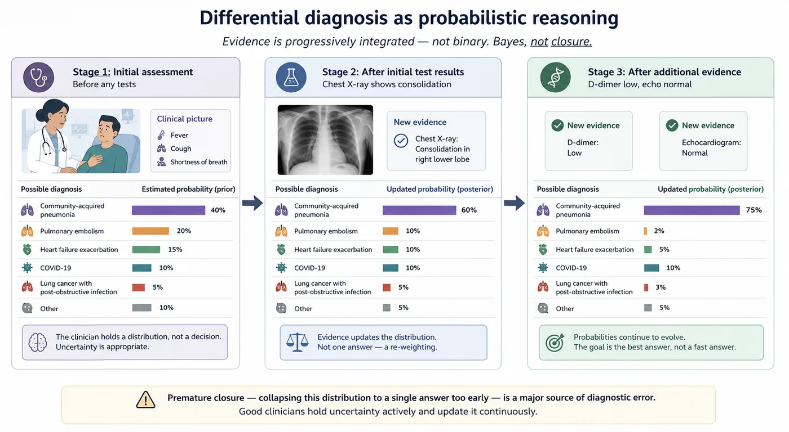
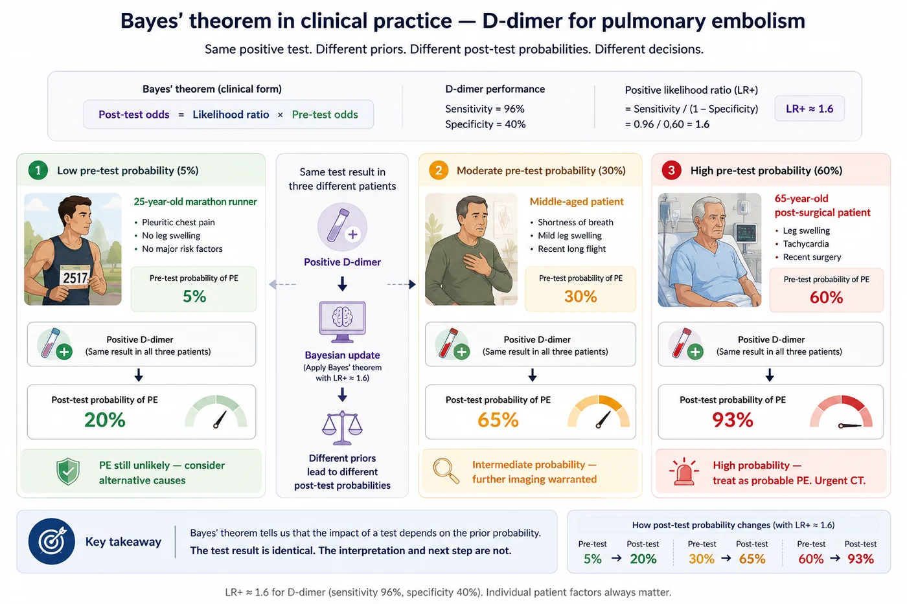
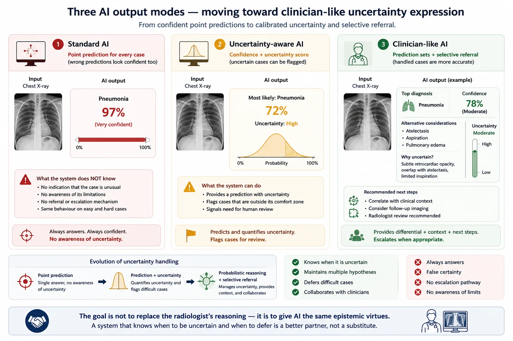

Session 3 — Uncertainty in Clinical Practice 🩺¶
Part 1 — Foundations
Uncertainty quantification is not a new idea invented by machine learning researchers. It is what good clinicians have always done — and what we are now trying to teach machines to do.

🔗 Bridge from Sessions 1 & 2¶
Session 1 showed us that a model that always answers confidently is not as useful as one that knows when to be uncertain. Session 2 gave us two types of uncertainty — aleatoric and epistemic — and showed why the distinction is clinically actionable. This session asks a deeper question: is uncertainty in clinical AI really a new problem?
The answer is no. Clinicians have been navigating uncertainty for as long as medicine has existed. The tools they use — differential diagnosis, pre-test probability, likelihood ratios, clinical reasoning — are all forms of probabilistic reasoning. Understanding how clinicians handle uncertainty is the best starting point for understanding what we want from AI systems.
What you'll learn in this session¶
- How clinicians already reason probabilistically — and have done so for centuries
- What a differential diagnosis is, and why it is a natural form of uncertainty quantification
- How Bayesian reasoning underlies clinical decision-making without most clinicians knowing it
- The difference between uncertainty in the data and uncertainty in the decision — and why both matter
- Why AI systems that don't express uncertainty are epistemically inferior to the clinicians they're meant to support
- What it would look like for an AI system to reason the way a good clinician does
🩺 1. How clinicians already reason probabilistically¶
When a clinician examines a patient, they do not work toward a single diagnosis. They work toward a ranked list of possibilities, each with an implicit probability, updated continuously as new evidence arrives.
Consider a patient presenting to the emergency department with fever, cough, and shortness of breath. Before looking at a single test result, the clinician's mind is already running a probabilistic assessment:
- Community-acquired pneumonia — most likely given the symptom cluster
- Pulmonary embolism — less likely but must not be missed given the dyspnea
- Heart failure exacerbation — possible given the age and history
- COVID-19 — highly dependent on current prevalence in the community
- Lung cancer with post-obstructive infection — low probability but worth keeping in mind
This mental list is not formal, but it is probabilistic. The clinician is holding a distribution over diagnoses — not a single answer — and every new piece of information updates that distribution. A chest X-ray showing consolidation raises pneumonia and lowers PE. A D-dimer result raises or lowers the PE probability depending on its value. An echocardiogram updates the heart failure probability.
This is Bayesian reasoning in action — prior beliefs updated by evidence to produce a posterior. And clinicians do it naturally, without calling it Bayesian.
The crucial point: a clinician who collapses this distribution to a single answer prematurely is considered dangerous. Premature closure — committing to one diagnosis too early and stopping the search — is one of the most commonly cited cognitive biases in clinical error analysis. Good clinicians resist it. They hold uncertainty actively, not as a failure, but as an epistemically honest response to incomplete information.

The diagnostic process can be viewed as successive updates to a probability distribution over competing hypotheses. Each new finding modifies the relative plausibility of candidate diagnoses, reducing uncertainty while preserving alternative explanations until they are adequately ruled out.
📋 2. The differential diagnosis as a UQ framework¶
The differential diagnosis is the formal clinical tool for managing diagnostic uncertainty. Every medical student learns to generate one: a ranked list of possible diagnoses, ordered from most to least likely, that could explain the patient's presentation.
What is a differential diagnosis, translated into machine learning terms?
It is a prediction set — a set of possible outputs, not a single point prediction. It acknowledges that the available evidence does not uniquely determine the diagnosis. It is honest about what is known and what isn't. And it comes with an implicit ordering that reflects the clinician's confidence in each possibility.
This maps remarkably well onto what we want from UQ algorithms:
| Clinical concept | UQ equivalent |
|---|---|
| Differential diagnosis | Prediction set |
| Most likely diagnosis | Point prediction (argmax) |
| Confidence in top diagnosis | Predicted probability / uncertainty score |
| "Can't rule out PE" | High uncertainty — model lacks certainty |
| "This is a classic presentation" | Low uncertainty — confident prediction |
| "I'd like a second opinion" | Model flags for human review |
| "Let's wait and see" | Abstention / deferral |
💡 Intuition check
A radiologist's report that says "findings consistent with pneumonia; pulmonary edema cannot be excluded" is a prediction set of size 2. It is not a failure to diagnose — it is an honest and responsible clinical statement. An AI system that outputs a 94% confidence score for pneumonia when the ground truth is ambiguous is making a stronger claim than the evidence supports. The radiologist is being more epistemically honest than the model.
🔢 3. Pre-test probability and Bayes' theorem in the clinic¶
Clinical reasoning has a formal probabilistic backbone that most clinicians apply intuitively, even if they wouldn't describe it in mathematical terms. The most explicit version is the pre-test / post-test probability framework.
Before ordering a test, the clinician estimates the pre-test probability of a diagnosis — the probability based on symptoms, history, and clinical context alone. After receiving the test result, they update to a post-test probability using the test's sensitivity and specificity.
This is Bayes' theorem:
$$P(\text{disease} \mid \text{test}^+) = \frac{P(\text{test}^+ \mid \text{disease}) \cdot P(\text{disease})}{P(\text{test}^+)}$$
Or in clinical language:
$$\text{Post-test odds} = \text{Likelihood ratio} \times \text{Pre-test odds}$$
A positive D-dimer in a low pre-test probability patient for PE barely moves the needle — because the prior is so low that even a positive result leaves the post-test probability moderate. The same positive D-dimer in a high pre-test probability patient is much more clinically significant.
This is not abstract mathematics — it is taught in every medical school and applied (implicitly or explicitly) by every clinician every day. The connection to Session 4 is direct: when we build Bayesian neural networks, we are doing the same thing. We start with a prior, observe data (the image), and compute a posterior (the updated diagnostic probability). The machinery is more complex, but the logic is identical.
🏥 Clinical example
A 25-year-old marathon runner presents with pleuritic chest pain. Pre-test probability of PE: low (5%). D-dimer comes back elevated. Post-test probability: still only 20% — because the prior was so low. The clinician does not jump to CT pulmonary angiography. Now consider the same D-dimer result in a 65-year-old post-surgical patient with leg swelling. Pre-test probability: high (60%). Post-test probability: 93%. CT is urgent. Same test result, completely different clinical implications — because the prior is different.

Identical test results can lead to markedly different levels of diagnostic certainty and clinical action depending on the patient's baseline risk. This dependence on prior belief is a central feature of Bayesian inference and underlies evidence-based diagnostic decision-making.
🧩 4. Two levels of uncertainty in clinical decisions¶
Clinical uncertainty operates at two distinct levels, and keeping them separate matters for how we design AI systems.
Uncertainty in the data 📊¶
This is uncertainty about the state of the world — what is actually wrong with this patient? It comes from incomplete information: the history isn't fully known, the image quality is imperfect, the test has limited sensitivity. This maps directly onto aleatoric uncertainty from Session 2.
A skilled clinician manages this by gathering more information — ordering more tests, taking a more detailed history, requesting repeat imaging. When the data uncertainty is irreducible (the image is genuinely ambiguous), the right response is to acknowledge it honestly in the report.
Uncertainty in the decision 🎯¶
This is uncertainty about what to do, given what you know. Even when the diagnosis is clear, the right treatment may not be. Even when the test result is unambiguous, the clinical action depends on patient preferences, comorbidities, resource availability, and clinical judgment.
This is a different kind of uncertainty — it's about values, policies, and trade-offs, not just empirical facts. It maps loosely onto epistemic uncertainty in the sense that it reflects gaps in knowledge — about what treatments work in this patient's context, about how to weigh competing priorities.
AI systems trained on diagnostic tasks address the first type of uncertainty well. The second type — uncertainty in the decision — is harder to model and rarely addressed by current systems.
🤝 5. Why current AI systems are epistemically inferior to clinicians¶
A senior radiologist reading a chest X-ray does several things that current AI systems cannot:
They know what they don't know. A radiologist who hasn't seen many cases of a rare condition will say so. They flag when a presentation is outside their experience. They recommend specialist consultation. Current AI systems have no such self-awareness — they will produce a confident output even on inputs completely outside their training distribution.
They hold uncertainty actively. A radiologist reading an ambiguous scan holds multiple hypotheses simultaneously without collapsing to a single answer. They say "most consistent with X, but Y cannot be excluded." Current AI systems produce a point estimate — one number, one answer — with no equivalent of that hedge.
They contextualise their uncertainty. A radiologist who is uncertain about whether a finding represents early consolidation or atelectasis will say which clinical features would help distinguish them, what the consequences of each diagnosis are, and what follow-up would be appropriate. Current AI systems, even when they produce uncertainty scores, rarely provide this kind of actionable context.
They update on new information. A clinician integrates information from the clinical history, the referring physician's note, the patient's appearance, and the image itself. Current AI systems typically work only from the image — they don't update on clinical context.
This is not a criticism of AI — it is a description of the gap that this course is about closing. The algorithms in Part 2 are the first step toward building systems that know what they don't know. The evaluation frameworks in Part 3 are the tools for checking whether they succeed.
🏥 Clinical framing
The goal is not to replace the radiologist's probabilistic reasoning — it is to give AI systems the same capacity. A tool that assists a radiologist by saying "I'm highly confident about these 80 cases — here are the 20 I'm uncertain about" is more useful than one that processes all 100 with uniform (false) confidence. The first tool respects the clinician's expertise and augments it. The second substitutes a false certainty for genuine clinical judgment.

As AI systems become more capable of representing uncertainty, their role shifts from providing isolated predictions to participating in a broader diagnostic process that includes hypothesis generation, evidence assessment, and selective referral when confidence is insufficient.
📚 6. Recommended Reading¶
Jerome Groopman, 2007 — Houghton Mifflin
Not a technical book — a beautifully written exploration of clinical reasoning, cognitive biases, and diagnostic error. Premature closure, availability bias, anchoring — the failure modes of human diagnostic reasoning are surprisingly similar to the failure modes of AI. Essential reading for anyone building clinical AI.
The Uncertain Art: Thoughts on a Life in Medicine
Sherwin B. Nuland, 2008 — Random House
A physician-writer's reflection on uncertainty in clinical practice. Less technical than Groopman but rich in the experience of navigating uncertainty as a clinician. A good companion to the more analytical sessions that follow. ([Google Books][2])
Tolerating Uncertainty — The Next Medical Revolution?
Arabella L. Simpkin & Richard M. Schwartzstein, 2016 — New England Journal of Medicine
A short, highly readable perspective arguing that medical education should explicitly teach tolerance for uncertainty. The authors make the case that acknowledging uncertainty is a clinical skill, not a failure. Directly relevant to how we think about what we want from clinical AI.
✅ Session summary¶
| Concept | Key takeaway |
|---|---|
| 🩺 Clinical reasoning | Clinicians always reason probabilistically — holding a distribution over diagnoses, not a single answer |
| 📋 Differential diagnosis | A natural prediction set — multiple possibilities held simultaneously, ordered by probability |
| 🔢 Pre-test probability | The prior in Bayes' theorem — the starting point before evidence arrives |
| 🧩 Two levels | Uncertainty in the data (aleatoric) and uncertainty in the decision (epistemic) |
| 🤝 The gap | Current AI systems lack self-awareness, cannot hold uncertainty actively, and don't contextualise their uncertainty |
➡️ Next: Part 2, Session 4 — The Bayesian Perspective
The mathematical language that formalizes everything this session described intuitively. Priors, posteriors, likelihoods — and why computing the exact posterior is harder than it looks.